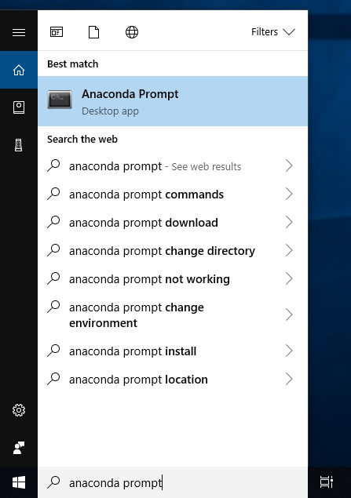

Keyboard shortcuts:
N/СпейсNext Slide
PPrevious Slide
OSlides Overview
ctrl+left clickZoom Element
If you want print version => add '
?print-pdf' at the end of slides URL (remove '#' fragment) and then print.
Like: https://wwwcourses.github.io/...CourseIntro.html?print-pdf
Python: using third-party modules. Virtual Environments.
Created for

Iva E. Popova, 2024,

Python's third-party modules. PIP - the Python Package Manager
- Python has a strong community which releases lot's of modules (packages), which you can use for free and focus on "get job done", instead of reinventing the wheel.
- pip is the tool for installing Python packages from PyPI (Python Package Index)
- Note, that if you do not use a Virtual Environment, a package installed by using pip will be installed in your system's python distribution.
- We are going to see how to install third-party modules after we get familiar with Python's Virtual Environments
pip basic commands
- get help on pip:
- pip help
- install a package from PyPI:
- pip install package_name
- uninstall a package
- pip uninstall package_name
- list installed packages:
- pip list
- upgrade a package:
- pip install --upgrade SomePackage
- show information about installed packages.:
- pip show package_name
- output installed packages in requirements format
- pip freeze
Reference: pip commands
Python Virtual Environments
Python Virtual Environments
Virtual environment - Why?
- Python apps usually depends on many modules(packages), which depends on other packages, and very often - from a specific version of a package.
- Many system tools also depends on specific versions of installed Python packages.
- You don't want to pollute your system's Python environment or to deal with dependency hell!

Virtual environment - What?
- A virtual environment is an isolated Python environment that allows packages to be installed for use by a particular application, rather than being installed system wide
- A virtual environment is a directory tree which contains Python interpreter, libraries and scripts installed into it, and other files which indicate that it is a virtual environment.
- There are many tools for working with virtual environments in Python (virtualenv, pipenv, poetry, conda, etc.)
- Starting with Python 3.4,
venvmodule is the preferred way to create and manage virtual environments. - venv module is included in the Python standard library and requires no additional installation.
Create Virtual Environment
# make sure you are in project folder, where you want to use virtual environment
# create virtual environment with name ".venv"
python3 -m venv .venv
# a folder '.venv' is created in the project folder
.venvis a common name for a virtual environment as it keeps the directory typically hidden in your shell.- Of course, you can use any other name for your virtual environment.
- Note, that you need to create a virtual environment per project only once. But each time you work in your project you must activate it.
Activate virtual environment
- In order to install and use python packages in your virtual env, you must activate it:
- If on PowerShell you receive an error File ... cannot be loaded because running scripts is disabled on this system you must first set the PowerShell execution policies (Set-ExecutionPolicy @microsoft.com):
- You can confirm you’re in the virtual environment by checking the location of your Python interpreter:
# On Windows PowerShell run:
.venv\Scripts\Activate.ps1
# On Windows CommandPrompt run:
.venv\Scripts\activate.bat
# On Windows GitBash run:
source .venv\Scripts\activate
# On Linux, MacOS, run:
source .venv/bin/activate
Set-ExecutionPolicy Unrestricted -Scope Process
# now try again to activate:
.venv\Scripts\Activate.ps1
# On Windows, run:
where python
# On Unix or MacOS, run:
which python
# It should be in the .venv directory
Deactivate virtual environment
- If you want to switch projects or otherwise leave your virtual environment, simply run
deactivate
References
- Virtual Environments and Packages @python3 tutorial
Installing packages using pip and virtual environments
Installing packages using pip and virtual environments
Live Demo
conda - a powerful package and environment manager
Conda - getting started
Overview
- Conda is a powerful package manager and environment manager that you use with command line commands at the Anaconda Prompt for Windows, or in a terminal window for macOS or Linux.
- Simply said, conda merges the functionality of pip - the Python package manager and venv - an environment manager for Python. But conda is language agnostic (works for many other languages).
- Reference: Getting started with conda @conda user guide
conda installation
- The fastest way to obtain conda is to install Miniconda, a mini version of Anaconda that includes only conda and its dependencies.
- If you prefer to have conda plus over 7,500 open-source packages, install Anaconda
- Reference: conda instalation

Starting conda - Windows
- From the Start menu, search for and open "Anaconda Prompt." 
{kind=link}
Starting conda - MacOS
- Just start a Terminal
- Open Launchpad, then click the terminal icon.
Starting conda - Linux
- Just start a Terminal
Verify installation
# type
conda --version
# equivalent
conda -V
# if you see something like the output bellow, then you're good to go:
# conda 4.14.0
Working with conda environments
Working with conda environments
managing environments
# create new, empty environment with name 'testenv'
conda create --name testenv
# Create an environment + specific python version
conda create --name myenv_3_7 python==3.7.0
# Create an environment + specific Python version + packages
conda create --name env_name python==3.7.1 package_name1 package_name2
# list conda environments:
conda info --envs
# activate 'testenv' environment:
conda activate testenv
# deactivate current environment:
conda deactivate
# Remove an environment:
conda env remove -n testenv
- Reference: Managing Environments @conda docs
Installing/removing packages
- Once activated you can install one or more packages with conda by:
- Reference: Installing packages with conda
# install package with name 'pkg_name1' - latest version:
conda install pkg_name1
# install package with name 'pkg_name1' - version 1.0.0:
conda install pkg_name1==1.0.0
# install multiple packages:
conda install pkg_name1 pkg_name2
See the list of packages and environments
# list packages in current environment
conda list
# list packages in specific environment
conda list -n testenv
# list of environments
conda info --envs
#or
conda env list
Sharing environments across platforms
- With next command you can create a spec file of you environment have all the information needed for environment to be duplicated on another machine
- Adding --from-history flag will export only the packages installed by conda. It will NOT include the dependency packages or packages you installed using any other method
- All information, needed for environment to be repicated will be in the file:
environment.yml - To re-create an environment:
conda env export --from-history > environment.yml
conda env create -f environment.yml